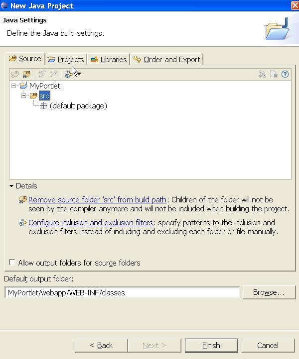
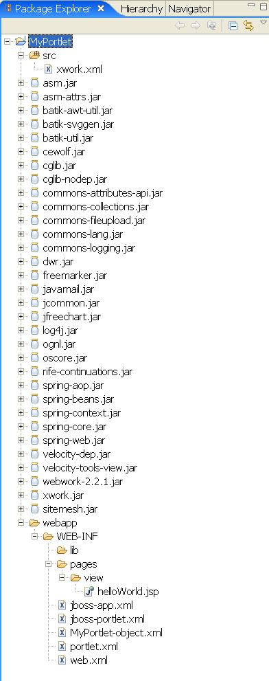
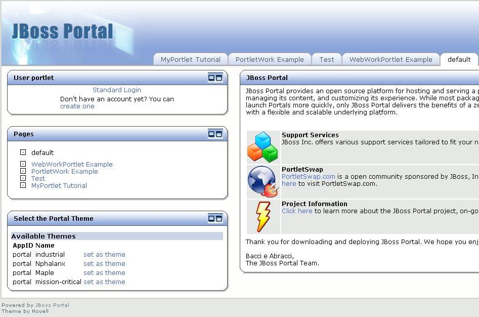
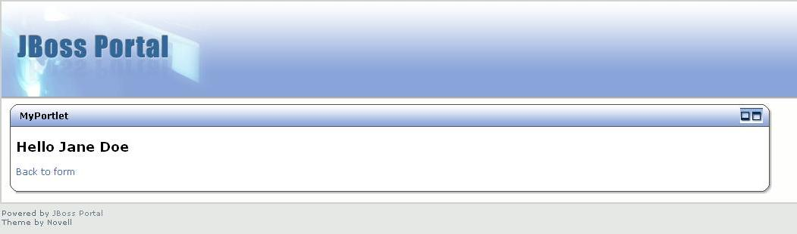

| Check out the new updated Struts 2 Portlet Tutorial |
| The Portlet support is experimental. Feedback is appreciated! |
Index
- Introduction
- Installing Eclipse
- Installing JBoss Portal 2.2
- Creating the project
- Classpath settings
- portlet.xml
- web.xml
- Hello World!
- xwork.xml
- JBoss Portal descriptors
- Deployment
- Next step
- Re-deployment
Step-by-Step Tutorial
Introduction
This tutorial walks you through the process of building a simple portlet application, using Eclipse, JBoss Portal 2.2 and the WebWork Portlet framework.
Installing Eclipse
In the tutorial, we will be using Eclipse 3.1.1 which can be downloaded from http://www.eclipse.org
Installing JBoss Portal 2.2
JBoss Portal 2.2 can be found at http://www.jboss.com/products/jbossportal/downloads.
Creating the project
A Portlet application is basically packaged as a regular web application, but with an additional descriptor; portlet.xml. The first step of the tutorial is to create the project structure in eclipse. First, let's create the Java project itself using the new project wizard. We call the project 'MyPortlet'. Make sure to select the "Create separate source and output folders" radio button, and hit "next". In the next wizard step, set the output folder for the 'src' source folder to 'MyPortlet/webapp/WEB-INF/classes'. This makes sure it will be easy for us to export the application as a WAR file when we're done.
New project wizard

New project wizard, cont

Classpath settings
Before buliding the application itself, we need to add some required jar files to the build classpath and the WEB-INF/lib folder. Firstly, create the WEB-INF/lib folder and download the WebWork 2.2.1 distribution and unzip it to your local harddrive. Locate the jar files shown in the screenshot and and put them in the newly created WEB-INF/lib folder. Select all the jar files, and right click and select "Build Path -> Add to Build Path". Now your local project should look similar to the screenshot.

| If there are jar files here that aren't included in the webwork distribution you have downloaded, you can safely assume that they are not needed. |
portlet.xml
Next thing we do is create a portlet.xml file in the WEB-INF folder. In this file, write the following:
This portlet.xml file sets up the portlet using the com.opensymphony.webwork.portlet.dispatcher.Jsr168Dispatcher Portlet implementation. It also tells the Portlet that it will map the view portlet mode to a /view namespace in the XWork configuration, which we must remember when building our XWork actions. In addition, it tells the portlet that if it does not find an action parameter in the portlet request, the default action to invoke is the "index" action, which
should reside in the /view namespace in our xwork configuration.
web.xml
The WebWork Portlet support also requires you to include a web.xml descriptor that sets up some special servlets and filters needed to enable support for the WebWork tag libraries and template languages, since it relies on some of the interfaces and classes in the Servlet API. So create a web.xml file in the WEB-INF folder, and add the following:
The FilterDispatcher makes sure that URLs to stylesheets and js files within the webwork jar file resolve correctly. The ServletContextHolderListener is a Servlet context listener that stores a reference to the servlet context of the web application. This is needed by some of the initialization procedures used in the WebWork Portlet. The 'preparator' servlet is a special servlet that, before dispatching to a view (like JSP/ftl or velocity) initializes the HttpServletRequest/Response, and other Servlet API classes in the ServletActionContext that is used in many of the JSPs and templates.
Hello World!
With these basic project structure, portlet.xml and web.xml in place, it's time to do the mandatory "Hello World" example, so let's create a place to store our JSP files. Create a WEB-INF/pages/view folder, and within this folder, create the file "helloWorld.jsp". In this file, we simply put:
xwork.xml
At this point, it's time to prepare the xwork configuration file, xwork.xml. Create an empty file named xwork.xml in the root of the 'src' folder. In this file we put:
| If you're using version 2.2.1 of WebWork, include the file webwork-default.xml instead. |
Some important things to notice are that we create a package with namespace view, and our package extends the webwork-portlet-default package. The webwork-portlet-default package contains some special result types needed to run WebWork/XWork in a portlet container.
JBoss Portal descriptors
In addition to the regular portlet.xml and web.xml descriptors, JBoss Portal 2.2 requires us to add a couple of JBoss specific descriptor files. On of these descriptor files is named according to the name of the context root of our application, which in this case is the name of the exported war file itself. We will later create a war file named MyPortlet.war, so the name of the JBoss descriptor becomes 'MyPortlet-object.xml'. So we create this file in the WEB-INF folder, and insert the following text:
In addition, we need two other files, jboss-app.xml and jboss-portlet.xml which looks like this:
Deployment
Now we have a project structure that looks like this:
Project structure

Now it's time to try our incredible HelloWorld portlet. In a Windows Explorer session, we select the WEB-INF folder and zip it up and name the file 'MyPortlet.war'. Drop this war file in the server/default/deploy folder of JBoss Portal, and start the server. By default, the URL for JBoss portal is http://localhost:8080/portal, so point your browser to this address, and you will get to the front page of the portal, where you should get a "MyPortlet Tutorial" menu entry, as shown in the screenshot below. When pressing this menu link, you will get to our fantastic "Hello World" page!
JBoss Portal front page

MyPortlet portlet page

Next step
Next, let's do something a bit more interesting, namely create a simple form and display a result page. Let's start by creating our JSP that displays our form. Create a new file, 'helloForm.jsp' in the WEB-INF/pages/view/ folder. We will use the WebWork tag library to build the form on our page. The form itself will ask the user for a first name and last name, something like this:
Now we're ready to code some Java, not much, but at least a little bit. We create a new package in our src folder, let's name it com.opensymphony.webwork.portlet.tutorial. In this package, create a HelloWorldAction class. In usual WebWork manners, this class extends the ActionSupport class from the XWork framework, and we'll add a couple of properties that maps to our form in the JSP we just created:
We also need a JSP to display the processed input. We'll just use the old helloWorld.jsp and modify it a bit. As with helloForm.jsp, we import the WebWork tag library, and we use the ww:property tags to display the input from the form:
Re-deployment
Now we're ready to do a re-deployment of our application, so zip up a new war and drop it in the server/default/deploy folder. The "MyPortlet Tutorial" page will now display:
Hello World form

Enter some data, and press the "Say hello!" button, and you will get a nice little personalized "hello" message:
Personalized Hello World
